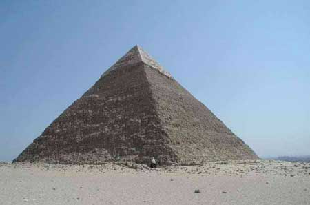

|
|
KHUFU (CHEOPS) ± ABAD KE 26
SM

Raja Mesir Khufu (Cheops dalam sebutan Yunani) dikenang
karena pembangunan piramida raksasa di Giza, yang tampaknya
dibangun diperuntukkan kuburannya. Kapan lahir dan matinya
tak ada titimangsanya, tetapi umumnya dianggap dia hidup
dalam masa dua puluh enam abad sebelum Masehi. Yang kita
tahu, ibukotanya di Memphis, Mesir, dan dia duduk di atas
tahta lama sekali, tetapi kehidupan lain-lainnya sedikit
sekali terungkap.
Tampaknya aman bila kita bilang bahwa piramida raksasa
adalah piramida baik yang paling terkenal maupun paling
merupakan bangunan yang mengagumkan yang pernah dibangun
manusia. Bahkan di jaman kuno dia dianggap salah satu dari
tujuh keajaiban dunia. Kendati keenam yang lainnya sudah
berantakan jadi puing, piramida raksasa tetap tegak teguh,
satu kenangan yang mempesona buat raja,yang membuatnya.
Kesempurnaan konstruksinya maupun keluar biasaan
ukurannya betul-betul mengesankan. Meskipun kaki di bagian
paling puncaknya sudah dihancurkan, ketinggiannya masih
mencapai 450 kaki, kira-kira sama tingginya dengan gedung
bertingkat 35! Secara kasar 2.300.000 blok batu, tiap blok
beratnya sekitar 2.5 ton digunakan untuk piramida ini.
Karena piramida raksasa itu punya perangkat kamar-kamar
bagian dalam dan lorong-lorong, batu yang digunakan terdiri
dari pelbagai macam ukuran, menambah ruwet kerja
pembikinannya.
Entah bagaimana cara orang Mesir bekerja di masa empat
puluh enam abad yang lalu tanpa peralatan modern atau mesin,
tetapi toh mampu membikin bangunan serupa itu, betul-betul
gelap! Betul-betul bangunan itu memerlukan rencana teramat
cermat dan kesanggupan administrasi sempurna untuk menggali
sumber nasional buat suksesnya tugas luar biasa besar macam
begitu. Bila kita sepakati dugaan umum bahwa kejadian itu
memerlukan waktu dua puluh tahun, dengan sendirinya kita
harus bayangkan tak kurang dari kira-kira 300 blok batu
disusun tiap hari. Jelas, untuk membentuk blok-blok batu
sebanyak itu dan mengangkutnya ke tempat penyusunan
piramida, memotongnya sesuai dengan ukuran tepat seperti
yang diperlukan dan menempatkannya pada posisi yang
semestinya, betul-betul suatu tugas "gila-gilaan. " Seluruh
armada kapal harus dikerahkan untuk mengangkut blok-blok
batu itu, dan sistem suplai berencana diperlukan untuk
memberi makan "balatentara pekerja" yang terlibat dalam
proyek itu.
Piramida raksasa itu telah bertahan tegak selama 4500
tahun, dan mungkin masih tetap tegak seperti itu kendati
gedung-gedung bangunan modern sudah lama runtuh berantakan
jadi puing dan abu. Bangunan piramida itu betul-betul tak
terusakkan! Bahkan andaikata sebuah bom atom menghantam
persis ke tubuhnya, dia tak akan terhapus. Tentu, dikit demi
dikit. dia akan digerogoti jaman. Tetapi, hingga kini, kadar
erosinya masih memungkinkannya bertahan hingga lebih dari
satu juta tahun lagi.
Karena itu jelaslah, Cheops sebagai orang yang
meninggalkan warisan besar buat dunia, telah peroleh
kemasyhuran abadi, mungkin mengatasi kemasyhuran siapa saja
yang pernah hidup di atas permukaan bumi. (Bisakah Napoleon
atau Alexander Yang Agung masih diingat orang walau hanya
10.000 tahun yang akan datang?). Tetapi, kemasyhuran jauh
berbeda dengan apa yang disebut "pengaruh". Meskipun Cheops
punya pengaruh terhadap orang Mesir yang hidup di jamannya,
dia tak punya pengaruh apa-apa baik terhadap dunia luar
maupun masa-masa sesudahnya.
|